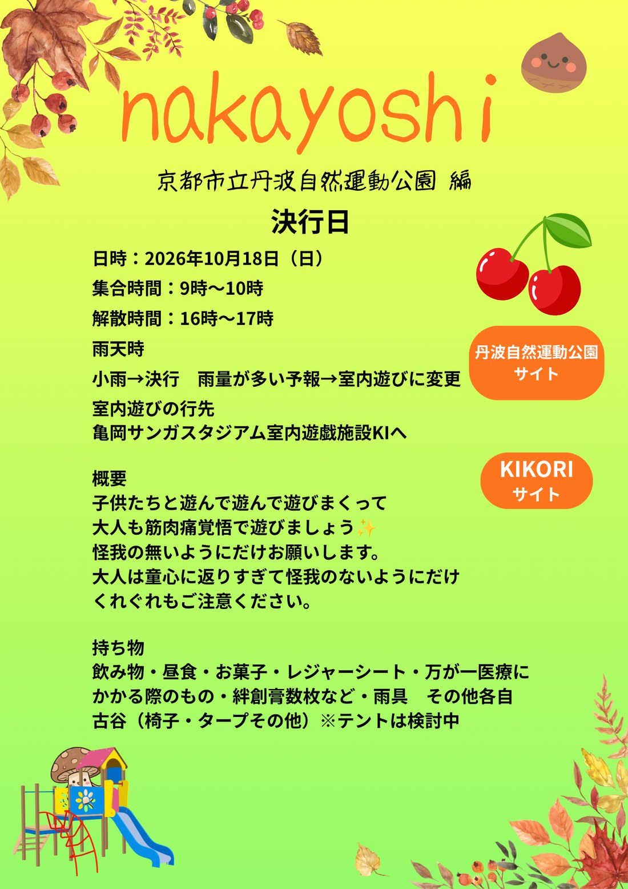
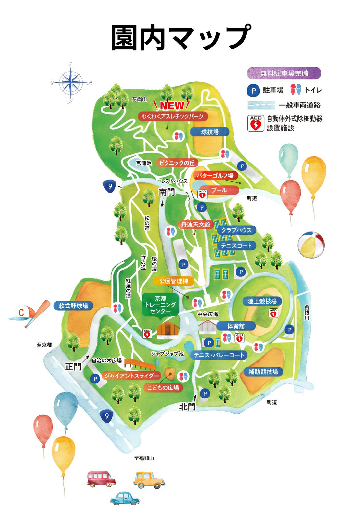
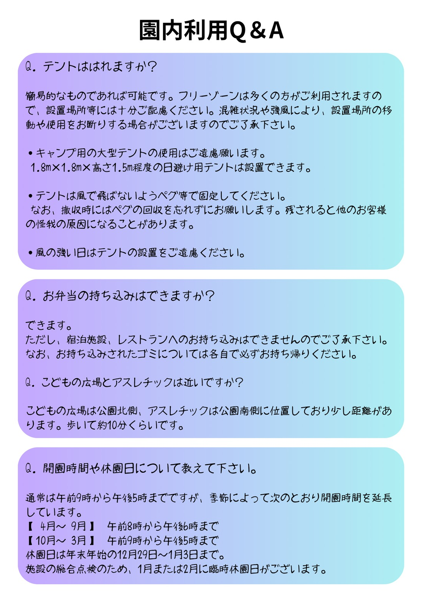

緊急時はこちら
避難所・病院・AEDを探す
🆘
近くを探す

丹波自然運動公園サイト
KIRInoko サイト
🪵 KIRInoko のサイトへ
↗
🌳 丹波自然運動公園のページ
▾
🏞
公園のメインサイト
開園時間・アクセス・お知らせ
↗
🧗
わくわくアスレチックパーク・こどもの広場
遊具の紹介ページ
↗
🔍
アスレチックパーク マップ拡大図
画像が開きます
↗

わくわくアスレチックパーク
球技場
ピクニックの丘
パターゴルフ場
プール
丹波天文館
クラブハウス
テニスコート
軟式野球場
京都トレーニングセンター
陸上競技場
体育館
テニス・バレーコート
補助競技場
ジャイアントスライダー
こどもの広場
👆 施設名をタップすると、公園の公式ページが開きます

内容は変更になる場合があります。
公園の最新情報は公式サイトでご確認ください。
↑ はじめにもどる